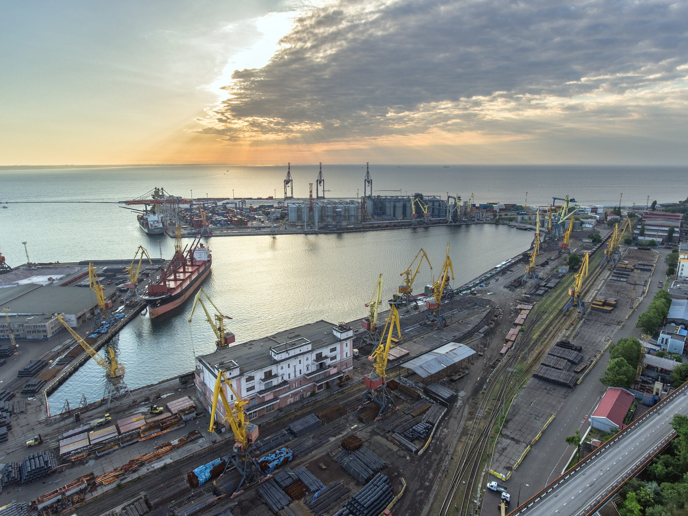
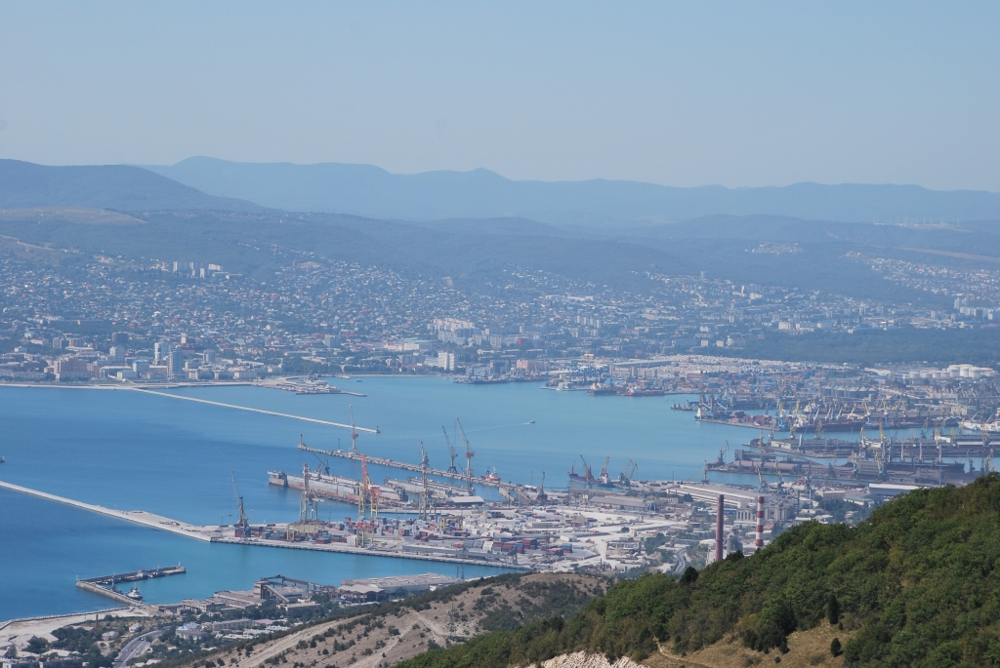
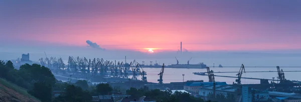
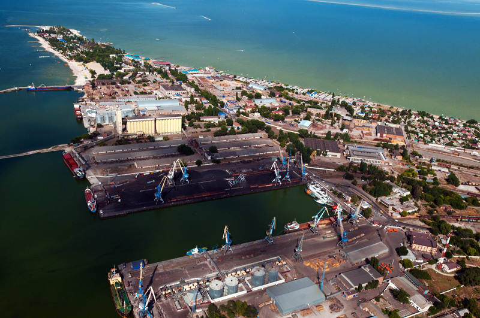
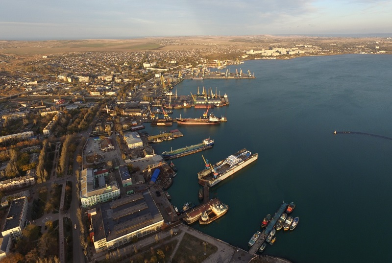

Ekonomická důležitost Černého a Azovského moře
Obě moře jsou klíčová pro regionální ekonomiku. Přístavy jako Odessa, Novorossijsk a Mariupol odbavují miliony tun zboží ročně, což podporuje obchod mezi Evropou a Asií.
Rybářství je jedním z hlavních zdrojů obživy, zejména v oblasti Azovského moře, které je známé svou bohatou populací ryb. Turismus také roste díky krásným plážím, přírodnímu bohatství a historickým památkám podél pobřeží.

Oděsa (Ukrajina)
- Lokalita: Černé moře
- Roční přeprava: Přes 40 milionů tun
- Specializace: Obilí, ropa, kontejnery
- Význam: Největší ukrajinský přístav, historický obchodní uzel

Novorossijsk (Rusko)
- Lokalita: Černé moře
- Roční přeprava: Přes 140 milionů tun
- Specializace: Ropa, uhlí, obilí
- Význam: Jeden z největších námořních přístavů Ruska

Mariupol (Ukrajina)
- Lokalita: Azovské moře
- Roční přeprava: Přes 15 milionů tun (před konfliktem)
- Specializace: Kovovýroba, uhlí, obilí
- Význam: Průmyslové centrum a hlavní přístav Azovského moře
.jpeg)
Burgas (Bulharsko)
- Lokalita: Černé moře
- Roční přeprava: Přes 20 milionů tun
- Specializace: Ropa, chemikálie, potraviny
- Význam: Největší přístav v Bulharsku

Varna (Bulharsko)
- Lokalita: Černé moře
- Roční přeprava: Přes 8 milionů tun
- Specializace: Dřevo, stavební materiály, osobní doprava
- Význam: Turistický a obchodní přístav

Kerč (Krym)
- Lokalita: Spojení Černého a Azovského moře
- Roční přeprava: Přes 5 milionů tun
- Specializace: Sypké materiály, ropa
- Význam: Strategický přístav u Kerčského průlivu
Zajímavé fakty:
- Černé moře je spojeno s Dunajem, jednou z nejdelších evropských řek, což umožňuje námořní obchod až do střední Evropy.
- Azovské moře patří mezi nejvýznamnější oblasti rybolovu v Evropě.
- V posledních letech se rozvíjejí projekty na rozvoj udržitelného rybolovu a ekoturistiky.
- Strategická poloha moří je důležitá i pro přepravu ropy a zemního plynu.